Study Ideas for Energy Use, AI, and Decision-Making
{kind=link}
{kind=link}
Van Den Broek, K. L., De Jager, L., Doran, R., & Böhm, G. (2025). Expert and citizen perceptions of the drivers of the energy transition: A mental model approach. Journal of Cleaner Production, 494, 144949. https://doi.org/10.1016/j.jclepro.2025.144949
{kind=link}
{kind=link}
{kind=link}
{kind=link}
{kind=link}
Buçinca, Z., Malaya, M. B., & Gajos, K. Z. (2021). To Trust or to Think: Cognitive Forcing Functions Can Reduce Overreliance on AI in AI-assisted Decision-making. Proceedings of the ACM on Human-Computer Interaction, 5(CSCW1), 1–21. https://doi.org/10.1145/3449287
{kind=link}
{kind=link}
Optimal nudging for cognitively bounded agents: A framework for modeling, predicting, and controlling the effects of choice architectures 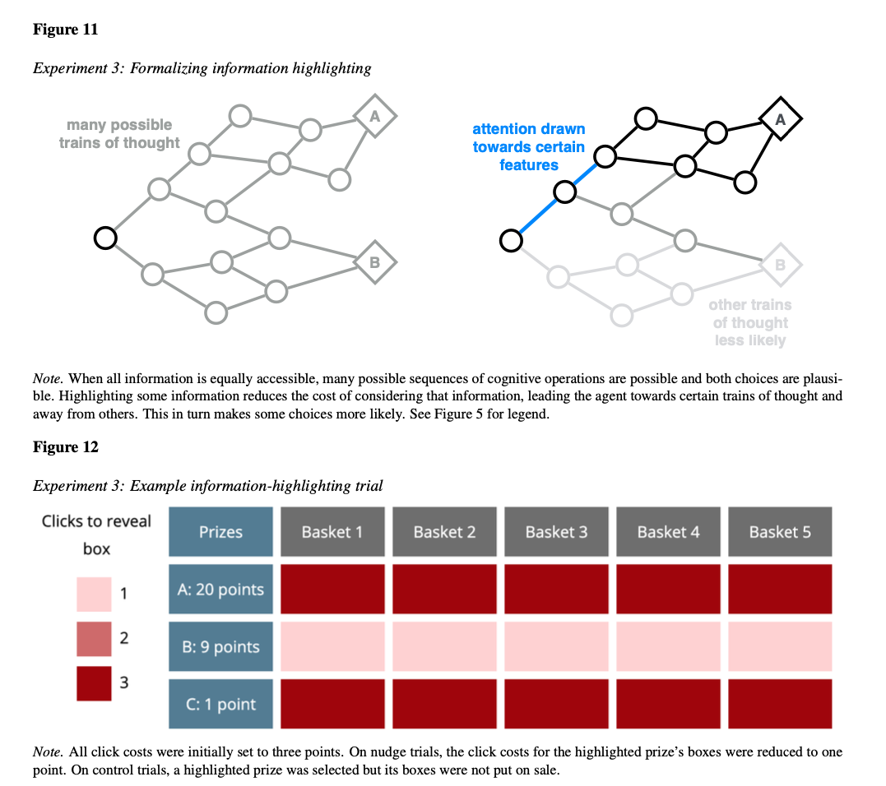 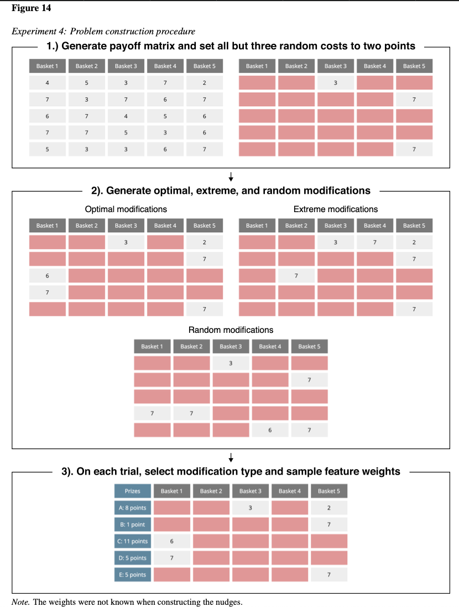 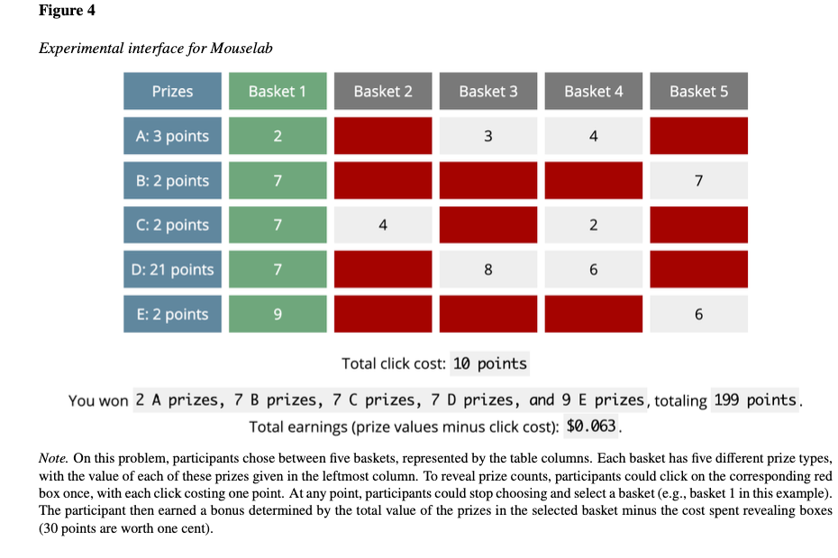
Starke, A. D., Willemsen, M. C., & Snijders, C. C. P. (2020). Beyond “one-size-fits-all” platforms: Applying Campbell’s paradigm to test personalized energy advice in the Netherlands. Energy Research & Social Science, 59, 101311. https://doi.org/10.1016/j.erss.2019.101311
{kind=link}
Decision-Making Impacts on Energy Consumption Display Design
{kind=link}
Wemyss, D., Castri, R., Cellina, F., De Luca, V., Lobsiger-Kägi, E., & Carabias, V. (2018). Examining community-level collaborative vs. Competitive approaches to enhance household electricity-saving behavior. Energy Efficiency, 11(8), 2057–2075. https://doi.org/10.1007/s12053-018-9691-z 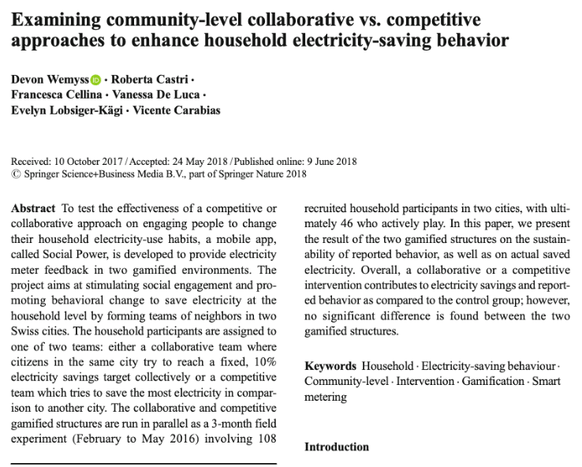
{kind=link}
Wekhof, T., & Houde, S. (2023). Using narratives to infer preferences in understanding the energy efficiency gap. Nature Energy, 8(9), 965–977. https://doi.org/10.1038/s41560-023-01303-x 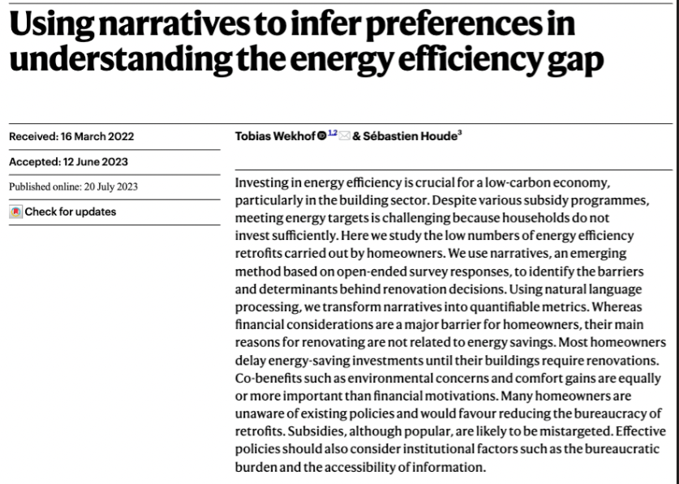
Blasch, J. E., Filippini, M., Kumar, N., & Martinez-Cruz, A. L. (2022). Boosting the choice of energy-efficient home appliances: The effectiveness of two types of decision support. Applied Economics, 54(31), 3598–3620. https://doi.org/10.1080/00036846.2021.2014395
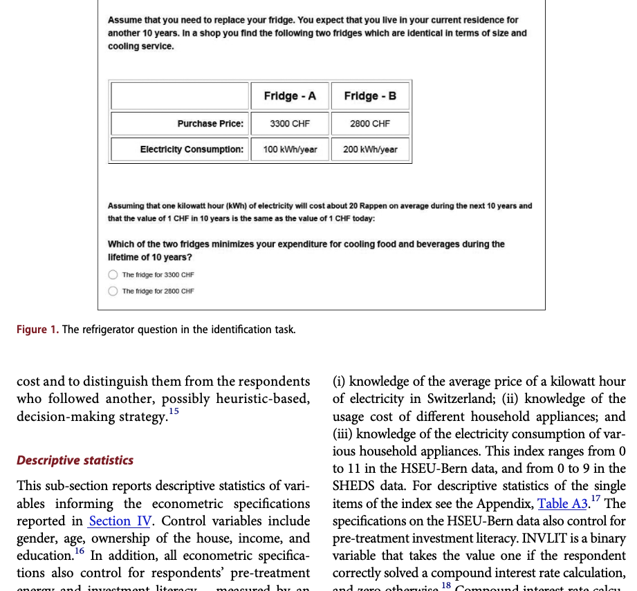 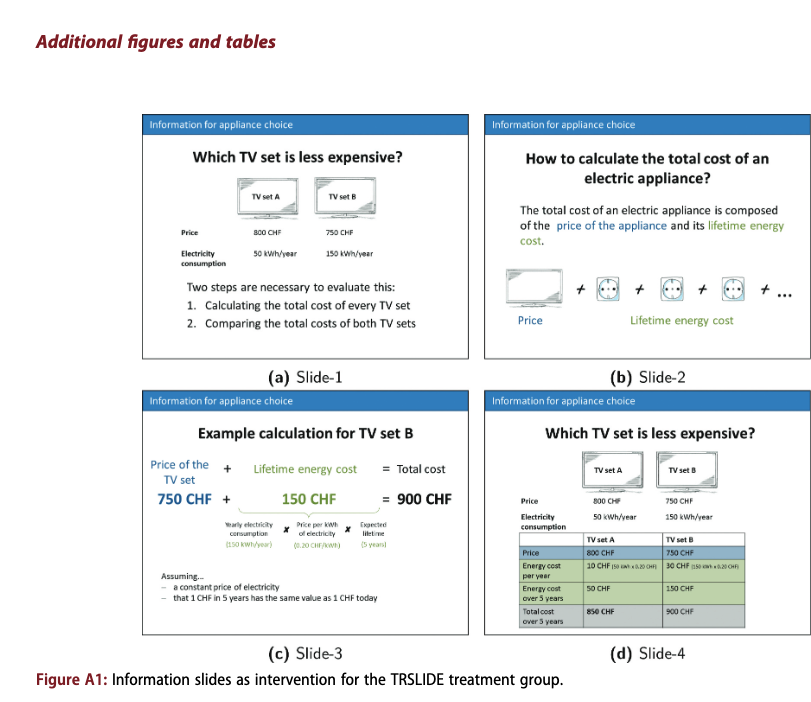 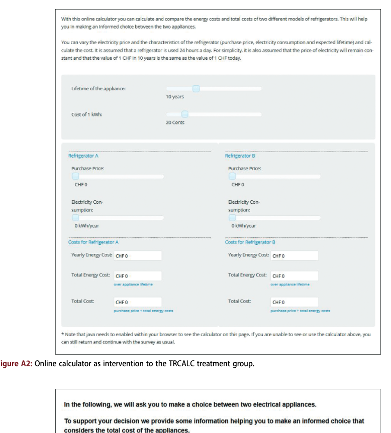
He, S., Blasch, J., van Beukering, P., & Wang, J. (2022). Energy labels and heuristic decision-making: The role of cognition and energy literacy. Energy Economics, 114, 106279. https://doi.org/10.1016/j.eneco.2022.106279
{kind=link}
Herrmann, M. R., Brumby, D. P., Oreszczyn, T., & Gilbert, X. M. P. (2018). Does data visualization affect users’ understanding of electricity consumption? Building Research & Information, 46(3), 238–250. https://doi.org/10.1080/09613218.2017.1356164 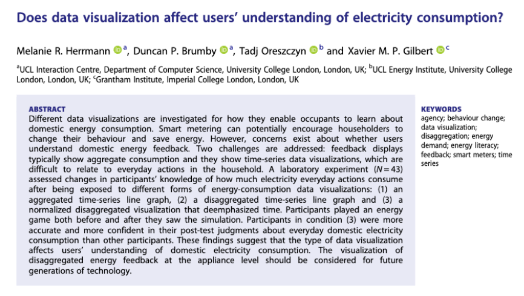
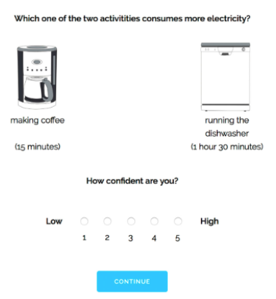 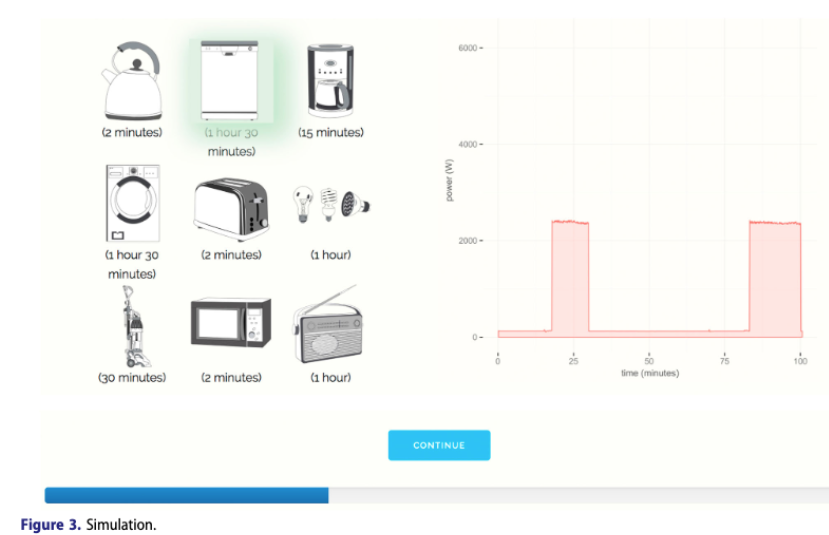
Kanay, A., Hilton, D., Charalambides, L., Corrégé, J.-B., Inaudi, E., Waroquier, L., & Cézéra, S. (2021). Making the carbon basket count: Goal setting promotes sustainable consumption in a simulated online supermarket. Journal of Economic Psychology, 83, 102348. https://doi.org/10.1016/j.joep.2020.102348
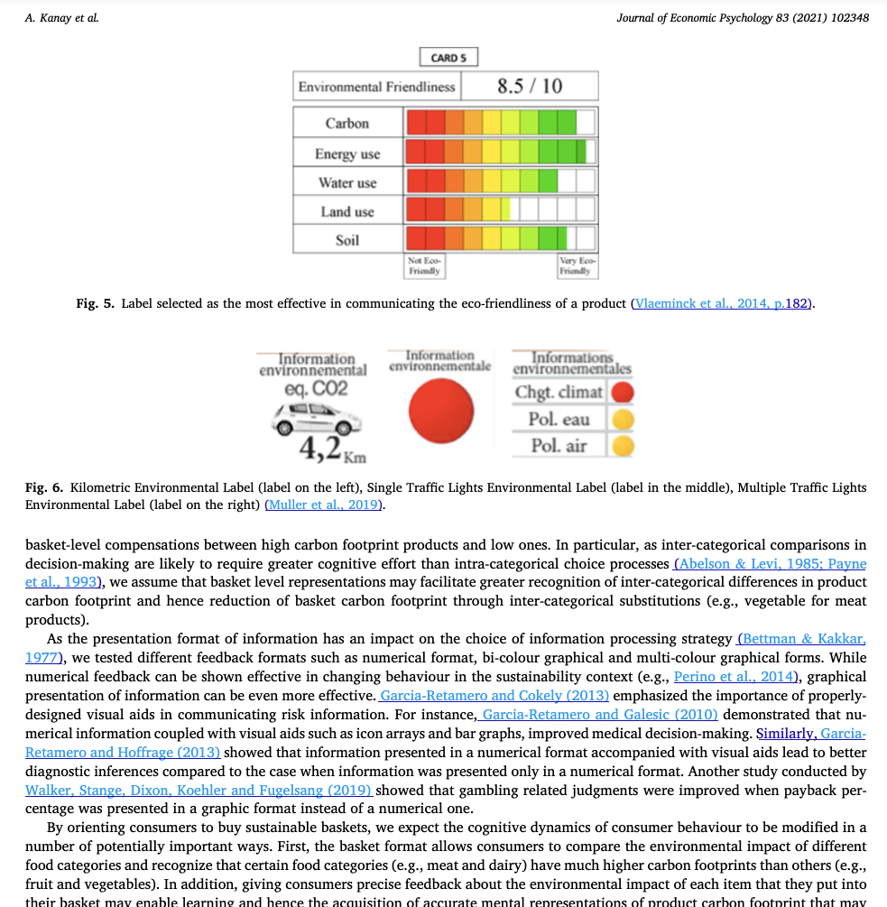
Larrick, R. P., Soll, J. B., & Keeney, R. L. (2015). Designing better energy metrics for consumers. Behavioral Science & Policy, 1(1), 63–75. https://doi.org/10.1177/237946151500100109 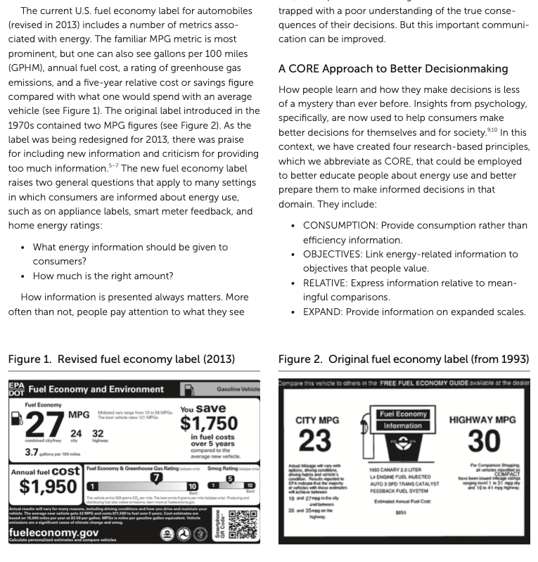
Ungemach, C., Camilleri, A. R., Johnson, E. J., Larrick, R. P., & Weber, E. U. (2018). Translated Attributes as Choice Architecture: Aligning Objectives and Choices Through Decision Signposts. Management Science, 64(5), 2445–2459. https://doi.org/10.1287/mnsc.2016.2703
{kind=link}
Tiede, K. E., Bjälkebring, P., & Peters, E. (2022). Numeracy, numeric attention, and number use in judgment and choice. Journal of Behavioral Decision Making, 35(3), e2264. https://doi.org/10.1002/bdm.2264
{kind=link}
{kind=link}
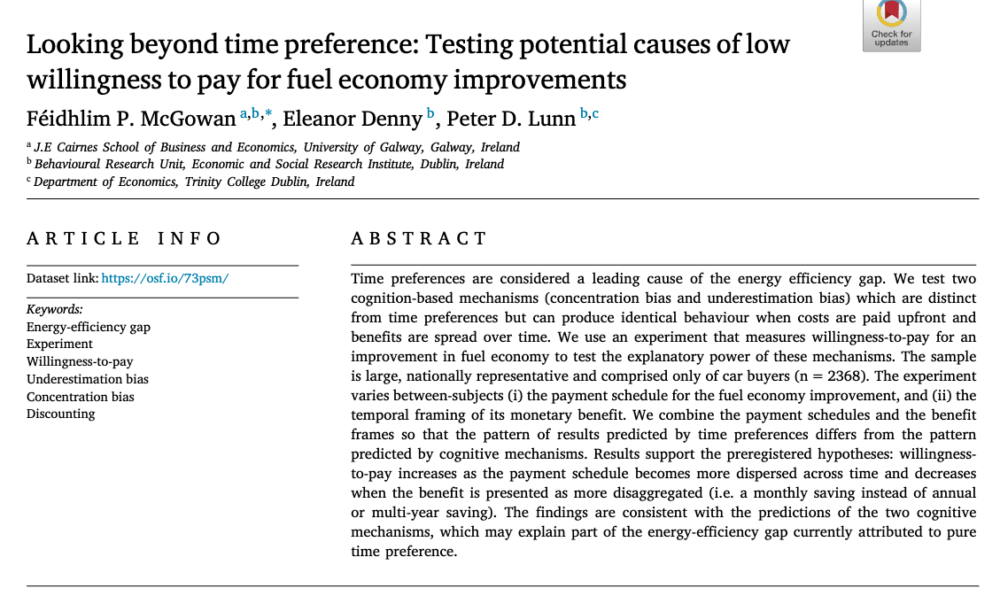 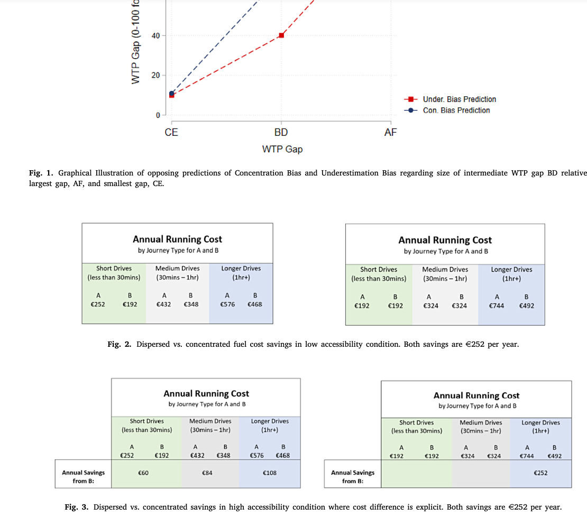
{kind=link}
Herberz, M., Hahnel, U. J. J., & Brosch, T. (2022). Counteracting electric vehicle range concern with a scalable behavioural intervention. Nature Energy, 7(6), 503–510. https://doi.org/10.1038/s41560-022-01028-3
{kind=link}
Biswas, S., Fuentes, T. L., McCord, K. H., Rackley, A. L. S., & Antonopoulos, C. A. (2024). Decisions and decision-makers: Mapping the sociotechnical cognition behind home energy upgrades in the United States. Energy Research & Social Science, 109, 103411. https://doi.org/10.1016/j.erss.2024.103411
Home energy upgrade decisions, such as adopting energy efficient equipment/appliances and renewable energy, are embedded within broader decisions and actions for upgrading the home. In this paper, 121 households in four states were interviewed to investigate the cognitive process of decision-making for home upgrades at the intersection of individual self-identites, normative goals of households and their sociotechnical environment. We found that home upgrades occur typically as interconnected sets of projects. They are constituted of decision dilemmas between domestic space-making aspirations and technological choices, moderated by sentiments, opinions of peers, information, limiting factors and self-identities. Indoor upgrades are largely influenced by the functional and emotional goals of the household, whereas exterior and structurally complex upgrades are usually determined by parameters of the sociotechnical environment, including costs and available expertise. Behaviorally, functional needs and social situation of individuals are more influential to upgrade decisions than environmental values or ideological positions on decarbonization.
He, G., Hemmer, P., Vössing, M., Schemmer, M., & Gadiraju, U. (2025). Fine-Grained Appropriate Reliance: Human-AI Collaboration with a Multi-Step Transparent Decision Workflow for Complex Task Decomposition (No. arXiv:2501.10909). arXiv. https://doi.org/10.48550/arXiv.2501.10909
{kind=link}
12/16/24
llm as information source (vs. tables, graphs, web-search etc.) - e.g, how well participants perform in some decision task when we manipulate their resource. llm as a feedback mechanism - explain how to perform better in natural language. - compared against numerical accuracy score, reinforcement feedback, no feedback etc.
12/10/24
Participants need to make energy reduction plans, but must first ‘search’ for relevant information - by checking on appliance usage, aggregate electricity usage etc.
Study ideas
https://gemini.google.com/app/1618628a009fdfed
Here are some cognitive psychology experiment study ideas involving human interaction with LLMs and energy-related decision-making, based on the provided document:
Participant as Advisor, AI as Client
- Advising an LLM Client: HHave the participant take on the role of an energy advisor. Their task is to convince an LLM, acting as the client, how to change its current (simulated) behavior to reduce energy use most effectively. You could manipulate the LLM client’s characteristics (e.g., receptiveness to advice, stated budget constraints, lifestyle) and measure the participant’s advising strategies and effectiveness.
- Collaborative Planning with AI Assistant: TThe participant acts as an energy advisor but works with an LLM assistant to create energy plans for clients (who could be hypothetical or simulated). The study could manipulate the quality of the LLM assistant’s plans (e.g., consistently good vs. inconsistent/poor). Measures could include the quality of the final plan, participant satisfaction, and how participants decide to use or override the LLM assistant’s help.
- LLM-Mediated Information Seeking: Participants perform an energy planning task and can interact with an LLM chatbot to ask questions about appliance usage, energy units, or saving tips. The study could examine how the availability of this LLM resource influences planning accuracy and strategy, particularly when the initial energy reduction goals are presented in different formats (like kWh, $, or %)
AI as Client & AI as Planner/Advisor (with Participant Interaction)
- Comparing Plans: Participants create their own energy reduction plan for a given scenario[cite: 296, 425]. They are then presented with an alternative plan generated by an LLM planner[cite: 296]. Participants must choose which plan to implement (their own or the LLM’s) or perhaps integrate aspects of both[cite: 296, 425]. This setup allows investigation into factors influencing trust, perceived competence of the AI, and potential over/under-reliance[cite: 426, 428]. The complexity of the planning problem or the manipulated quality/bias of the AI’s plan could be varied[cite: 296].
- Collaborative Planning with LLM Partner: Pair a human participant with an LLM agent to collaboratively create an energy plan[cite: 339, 340, 341]. The LLM could offer suggestions, ask clarifying questions, or present information in different formats to assist the human[cite: 340, 343]. Analyzing the interaction dynamics and the final plan’s quality could reveal how different information formats are utilized in collaboration and the LLM’s effectiveness as a planning tool[cite: 344, 345, 346].
- Multi-Step Workflow with LLM: Use a more complex task, like composite fact-checking related to energy claims, where participants work with an LLM through a multi-step workflow[cite: 278, 279, 280]. This allows examining appropriate reliance at a finer granularity, assessing how users interact with intermediate LLM steps versus just a final output[cite: 281, 282]. This could be adapted to energy planning by breaking the planning down into sub-goals or stages where LLM assistance is provided.
III. Understanding Cognitive Representations
- Identifying Dimensions: Present energy data in various formats (tables, graphs)[cite: 429]. Ask participants to identify key dimensions (e.g., appliance, time) and weight their importance[cite: 430, 431]. This probes mental models of energy consumption[cite: 433, 434].
- Abstraction Levels: Ask participants to create energy plans at different levels: concrete (specific kWh per appliance) versus abstract (target temperatures, usage hours)[cite: 435, 436]. Measure time, difficulty, and plan quality to understand hierarchical reasoning in this context[cite: 437, 438, 439].
- LLM Analysis of Reasoning: After a planning task, ask participants to explain their strategies in writing[cite: 403]. Use an LLM to analyze these explanations for themes, difficulties, and strategy differences related to how the task information was presented (e.g., goal in kWh vs. % vs. USD)[cite: 404, 405, 406, 407, 408, 409, 410].
Study ideas
Function learning or judgement paradigm - with household appliances. Learning some general principles about how much energy items use, and then testing on novel objects - manipulate direct energy judgements vs. money saving. - before or after the utility planning task?
Connect to literature on forecasting?
Simulating the existing representation study manipulations with LLM’s - Then seeing how different prompts or framing influence performance
Studying what representations people use when thinking about energy - The dimensions of a heating bill - The dimensions (and weights) of electricity from appliances
Task of listing as many things as possible that someone could do to reduce their energy bill - with AI assistance, or without
Participant takes the role of energy advisor - convincing llm client how to reduce their energy use
Participant takes the role of energy advisor - working with an llm assistant to create energy plans for clients - Some llm assistants create really good plans, others don’t - Using the llm to decide how best to help the client
Reward function that’s optimized within certain bounds of appliance type use (e.g., if heat goes too low, reward plummets)
Plans at different layers of abstraction - setting kwh per appliance - explicitly setting temperature average, and appliance hour usage amounts
The problem of creating a plan to influence some variable (e.g., utility bill) - identifying the relevant dimensions - Assigning weight to the dimensions
Ability to adjust plans based on added context. - e.g., the Meyers family wants to keep their energy bill the same -but Mr. Meyer needs to start working from home - and will need to use more energy to run his power tools. Make adjustments to their plan that will accomodate this change - while also maintaining their current energy costs.
Ways of integrating AI into a study on energy use
- Participant plays role of advisor, tells ‘AI client’ how to most effectively change current behavior
- AI generated feedback on advice?
- Participants choose between their own plan, and an AI’s alternative plan
- Manipulate what type of energy plan problems AI’s are good for
- Assess overreliance/undereliance tendencies
- Whether the tendency to over or under rely depends on complexity of problem
Things a LLM could do in the context of an experimental psychology task? - Custom feedback - summarize (and critique) user response patterns at trial or block level
NB_LLM-2
Building upon the original study that investigated the impact of presenting energy reduction goals in different numerical formats (kWh, %, USD) on consumers’ planning accuracy, several compelling follow-up studies could incorporate a Large Language Model (LLM) component to further explore this complex interplay between information format, cognitive processing, and energy-related decision-making. These studies could leverage the unique capabilities of LLMs in simulating human behavior, generating diverse content, providing personalized feedback, and analyzing textual data, thereby offering novel insights that complement and extend findings from human-only studies.
1. LLM as a Simulated Participant with Varying Energy Literacy:
A follow-up study could involve creating LLM-powered agents designed to simulate consumers with different levels of energy literacy. These agents could be prompted with the same energy reduction planning tasks presented in kWh, percentages, or USD, mirroring the original study’s design. The prompts for the LLM agents could be carefully crafted to embody characteristics of individuals with low, medium, and high energy literacy, potentially drawing upon existing definitions and measures of energy literacy.
- Methodology: Develop distinct prompt sets for LLM agents representing different energy literacy levels. These prompts might include information about their understanding of energy units, typical household behaviors, and their tendency to rely on different cues (e.g., absolute numbers, relative changes, monetary costs). Present these simulated agents with the energy planning task using the three different formats (kWh, %, USD) for the reduction goal, across the same family scenarios (climate regions) as the original study. Record the energy allocation decisions made by each LLM agent and analyze the accuracy of their plans in relation to the target reduction.
- Comparison with Human Data: Compare the planning accuracy of the LLM agents across the different information formats and energy literacy levels with the data obtained from human participants in the original study. This comparison could reveal whether the LLM’s simulated cognitive processes align with observed human behavior and whether the effect of information format on planning accuracy is consistent across both simulated and human samples.
- Exploring Reasoning Processes: Unlike observing human participants’ explicit reasoning, the internal processes of the LLM can be probed (to the extent allowed by the model). Analyzing the “reasoning” generated by the LLM agents (if the model provides such output) when making planning decisions in response to different formats could offer insights into the cognitive strategies employed by the simulated agents and how these strategies might be influenced by their simulated energy literacy and the presentation format.
2. LLM for Generating Explanations and Personalized Feedback:
Another avenue for follow-up research involves using an LLM to provide explanations and personalized feedback to human participants as they engage in the energy planning task. This could help elucidate why certain information formats are more or less effective and identify potential interventions to improve planning accuracy.
- Methodology: Replicate the original study with human participants. However, after participants complete their initial energy allocation, introduce an LLM-powered conversational agent. This agent could ask participants to explain their planning strategies for each scenario and the rationale behind their allocation choices, particularly in relation to the presented reduction goal format. The LLM could then provide personalized feedback based on the accuracy of their plan and their stated reasoning, highlighting potential discrepancies or suggesting alternative approaches. The feedback could be tailored to the information format the participant initially received (e.g., if the goal was in %, the feedback might reframe aspects in kWh or USD to enhance understanding).
- Analyzing Qualitative Explanations: The LLM could be used to analyze the qualitative explanations provided by participants regarding their planning processes. Using techniques like topic modeling or sentiment analysis, the LLM could identify common themes, difficulties encountered with specific formats, and the types of reasoning employed. This analysis could provide a richer understanding of the cognitive challenges associated with each information format.
- Impact of Personalized Feedback: Assess whether receiving personalized feedback from the LLM, especially when information is reframed in a different format or linked to energy literacy concepts, improves participants’ subsequent planning accuracy in a second planning task or in follow-up assessments. This could shed light on the potential of LLM-driven interventions for enhancing energy literacy and improving planning skills.
3. LLM for Prompt Engineering and Design of Information Displays:
LLMs could also be employed to explore more nuanced ways of presenting energy information within each format. Rather than simply providing the numerical goal, the LLM could be tasked with generating different phrasings, visual aids (if the study interface allows), or contextual information associated with each format to see if these variations impact planning accuracy.
- Methodology: Utilize an LLM to generate multiple variations of how the energy reduction goal could be presented within each of the three core formats (kWh, %, USD). For example, for a percentage reduction, the LLM could generate prompts that emphasize the absolute amount of energy saved, the comparison to typical household reductions, or the environmental impact of that reduction. For USD, variations could include comparisons to common household expenses or highlighting the long-term savings. Present these different variations to human participants in a controlled experiment, maintaining the overall planning task from the original study.
- Assessing the Impact of Nuance: Analyze whether subtle variations in the phrasing or contextualization of the energy reduction goal within each format significantly affect planning accuracy. This could help identify which specific communication strategies are most effective for conveying energy information in different units.
- LLM-Driven Iteration: The results from this study could then be fed back into the LLM, prompting it to generate further refined versions of the information displays based on what proved most effective. This iterative process could lead to the identification of optimized communication strategies for different energy information formats.
4. LLM for Simulating Long-Term Planning and Behavioral Change:
The original study focused on a single instance of energy planning. Follow-up studies could use LLMs to simulate how individuals might approach energy planning over time, incorporating elements of feedback, goal adjustment, and the potential for behavioral change.
- Methodology: Develop a simulated environment where LLM agents (again, potentially with varying simulated energy literacy) engage in repeated energy planning tasks over a simulated period (e.g., monthly or seasonal). Introduce feedback mechanisms, where the LLM agents receive information about their simulated energy consumption and the accuracy of their previous plans. Allow the agents to adjust their planning strategies and goals over time, influenced by the feedback and the format in which the information is presented.
- Longitudinal Analysis: Analyze how the planning accuracy and simulated energy consumption behaviors of the LLM agents evolve over the simulated period under different information formats. This could provide insights into the long-term effectiveness of each format for promoting sustained and accurate energy planning.
- Integration with Human Data on Behavioral Change: While direct comparison might be challenging, insights from this LLM-based simulation could be compared with findings from longitudinal studies of human energy consumption and response to feedback, helping to identify potential patterns and long-term effects associated with different information formats.
5. Combining LLMs and Human Participants in Collaborative Planning:
A novel approach could involve pairing human participants with an LLM agent to engage in a collaborative energy planning task. The LLM agent could be designed to offer suggestions, ask clarifying questions, and provide information in different formats to the human participant.
- Methodology: Recruit pairs of participants (or individual participants who interact with an LLM agent). Present them with an energy reduction goal and the household scenarios. Allow them to communicate and collaboratively develop an energy plan. The LLM agent could be programmed to strategically present energy information in different formats (e.g., if the human is struggling with percentages, the LLM could rephrase the information in kWh) and observe the impact on the collaborative planning process and the final accuracy of the plan.
- Analyzing Interaction Dynamics: Analyze the dialogue between the human participant and the LLM agent to understand how the different information formats are discussed, interpreted, and utilized in the collaborative process. This could reveal which formats facilitate clearer communication and understanding.
- Assessing the LLM’s Role as an Educational Tool: Evaluate the LLM’s effectiveness as a supportive tool for energy planning, particularly in helping individuals overcome challenges associated with specific information formats and improve their understanding of energy concepts.
Ethical Considerations:
When incorporating LLMs into studies involving human subjects, it is crucial to address ethical considerations. Participants should be informed about the use of AI agents, and their data privacy and confidentiality must be protected. The potential for bias in LLM outputs should also be acknowledged and mitigated through careful prompt design and evaluation.
By integrating LLMs into follow-up studies, researchers can gain deeper and more multifaceted insights into how the format of energy information affects consumers’ planning accuracy. These studies can move beyond simply observing outcomes to explore the underlying cognitive processes, the potential for personalized interventions, and the dynamics of long-term engagement with energy-related information, ultimately contributing to the development of more effective strategies for promoting residential energy conservation.
NB_LLM-1
https://notebooklm.google.com/notebook/b9b3533c-ddc0-49e3-b438-9e1f05272f9e?pli=1
Suggest possible follow up studies, which investigate similar questions, but incorporate a large language model (llm) component in addition to human subjects.
Building upon the hypothetical study that examined the impact of numerical representations of energy reduction goals (kWh, %, USD) on planning accuracy, incorporating a Large Language Model (LLM) component opens several exciting avenues for future research. These studies could delve deeper into the cognitive processes involved in energy planning, explore personalized information delivery, and enhance the ecological validity of the research. Here are some possible follow-up studies:
1. Investigating LLM-Mediated Information Seeking and Planning:
- Study Design: Replicate the original study’s design, but allow participants in all conditions to interact with an LLM-powered chatbot during the planning task. The chatbot could be designed to answer questions about appliance energy consumption, clarify the meaning of different units (kWh, %, USD), or provide general energy-saving tips.
- LLM Functionality: The chatbot’s responses could be tailored to the information format the participant is currently working with. For example, if a participant is in the percentage condition and asks about an appliance’s energy use, the chatbot could provide an estimate in terms of percentage of total household consumption or, if asked directly, in kWh. The interaction logs with the chatbot would be recorded.
- Research Questions:
- Does the availability of an LLM-powered information resource mediate the effect of information format on planning accuracy? For instance, do participants in the percentage or USD conditions who utilize the chatbot more effectively achieve higher accuracy?
- What types of questions do participants ask the chatbot in each information format condition? Do the questions reveal different levels of understanding or different cognitive challenges associated with each format?
- Can the LLM identify common misconceptions or errors in participants’ planning strategies based on their queries?
- Does interacting with an LLM influence participants’ perceived difficulty of the planning task or their confidence in their plan?
- Connection to Sources: This design aligns with research on Persuasive Conversational Agents (PCAs) for sustainability and the potential of LLMs to enhance user engagement and support decision-making. The study could also draw on work exploring user experience with LLM-based assistants. Analyzing the types of questions asked could provide insights into cognitive accessibility of different units.
2. Personalized Information Formatting with LLMs:
- Study Design: Begin by assessing participants’ energy literacy and their preferred format for receiving energy information (e.g., through a pre-study questionnaire). Then, replicate the original planning task, but allow an LLM to dynamically adjust the format in which information is presented based on the participant’s stated preferences or their demonstrated understanding during an initial planning stage (e.g., if they struggle with percentages, the LLM could offer information in kWh).
- LLM Functionality: The LLM would act as an adaptive interface, using natural language understanding to interpret user difficulties and employing natural language generation to present information in alternative formats. The system could track which formats are most frequently utilized or seem to correlate with improved planning.
- Research Questions:
- Does providing energy information in participants’ preferred format, facilitated by an LLM, lead to greater planning accuracy?
- Can an LLM effectively identify when a participant is struggling with a particular format and suggest or switch to a more comprehensible one?
- Do participants demonstrate improved planning accuracy over time as the LLM adapts the information format?
- How do participants perceive an energy planning tool that personalizes information format based on their needs?
- Connection to Sources: This study connects to the idea of flexible program designs and personalized approaches in feedback programs. It also relates to research on cognitive fluency and how fluent framing can influence decision-making. The LLM’s role in adapting information formats aligns with the concept of tailoring interventions to end-user characteristics.
3. LLM as a Simulated Household and Feedback Provider:
- Study Design: Human participants create an energy reduction plan (in one of the three formats). This plan is then “submitted” to an LLM that has been trained to simulate the energy consumption of a virtual household matching one of the scenarios from the original study (e.g., the Smith family in Texas). The LLM, based on its understanding of typical appliance usage and the participant’s proposed plan, would then generate realistic feedback on the likely energy savings, potential challenges, or areas where the plan might be less effective.
- LLM Functionality: The LLM’s feedback would be provided in natural language and could relate back to the original goal format (kWh, %, or USD). It could also ask clarifying questions or suggest alternative strategies. Participants would then have the opportunity to revise their plan based on the LLM’s feedback.
- Research Questions:
- Does receiving feedback from an LLM-simulated household on their energy plan improve the accuracy of participants’ revised plans?
- Is the effectiveness of LLM-generated feedback moderated by the initial information format in which the reduction goal was presented?
- What aspects of the LLM’s feedback (e.g., its specificity, the language used) are perceived as most helpful by participants?
- Does interacting with an LLM simulating a real-world context enhance the perceived ecological validity of the planning task?
- Connection to Sources: This design incorporates the concept of LLM agents imitating human behavior and their potential for creating believable simulations. It also aligns with the vast body of research on feedback in energy conservation, with the LLM acting as a sophisticated feedback provider. The use of simulated households could address some ecological validity concerns.
4. LLM for Generating and Evaluating Planning Scenarios:
- Study Design: Utilize an LLM to create a wider and more diverse set of household scenarios, varying in demographics, climate, appliance ownership, and baseline energy consumption. Human participants would then perform the energy planning task for a subset of these LLM-generated scenarios, with the reduction goal presented in one of the three formats. Subsequently, a separate LLM could be trained to evaluate the accuracy and feasibility of the participants’ plans for each scenario.
- LLM Functionality: The scenario-generating LLM would need to be prompted to create realistic and coherent household descriptions. The evaluation LLM would need to be trained on principles of energy consumption and savings to assess the plausibility of the proposed plans.
- Research Questions:
- Does the effect of information format on planning accuracy generalize across a wider range of household scenarios generated by an LLM?
- Can an LLM be effectively used to automate the evaluation of energy conservation plans, providing a more scalable approach to research in this area?
- Are there specific types of scenarios (e.g., those with more complex appliance configurations) where certain information formats lead to greater accuracy, as identified by the LLM evaluation?
- How does the consistency and reliability of LLM-generated scenario evaluations compare to human expert evaluations?
- Connection to Sources: This approach leverages the LLM’s ability to generate diverse textual data to enhance the scope and generalizability of the study. The use of an LLM for evaluation aligns with research exploring LLMs as evaluators in educational contexts.
5. Combining Quantitative Planning with Qualitative Explanations Analyzed by LLMs:
- Study Design: Replicate the original study, but after completing the planning task, ask participants to explain their reasoning and the strategies they used to achieve the reduction goal in an open-ended text box. These qualitative responses would then be analyzed using an LLM.
- LLM Functionality: The LLM could be used to identify common themes, strategies, and difficulties expressed by participants in each information format condition. It could also assess the coherence and understanding reflected in their explanations.
- Research Questions:
- Do the qualitative explanations provided by participants reveal different cognitive processes or challenges associated with planning in kWh, percentage, or USD?
- Can an LLM identify a correlation between the strategies described by participants and their planning accuracy in each condition?
- Are there systematic differences in the language used by participants in each condition when explaining their planning process?
- Do participants in the kWh condition provide more concrete or appliance-specific explanations compared to those in percentage or USD conditions?
- Connection to Sources: This study utilizes the LLM’s natural language processing capabilities for qualitative data analysis, offering deeper insights into the “why” behind the quantitative results. This approach is similar to using narratives to understand preferences and complements the quantitative measures of planning accuracy.
By integrating LLMs into studies investigating the impact of information format on energy planning, researchers can gain a more nuanced understanding of the cognitive processes involved, explore personalized interventions, and potentially enhance the scalability and ecological validity of their findings. These follow-up studies can contribute significantly to the development of more effective strategies for communicating energy information and promoting residential energy conservation.
I. Energy Plan Creation & AI Assistance
Idea 1: Collaborative Energy Planning
- Design: Participants are tasked with creating an energy reduction plan for a hypothetical household. They are randomly assigned to one of three conditions:
- Control: Participants plan alone.
- AI Assistant (Good): Participants collaborate with an AI assistant that consistently generates high-quality, feasible energy-saving suggestions.
- AI Assistant (Poor): Participants collaborate with an AI assistant that generates inconsistent, sometimes impractical suggestions.
- Measures:
- Quality of energy plans (e.g., feasibility, potential savings, comprehensiveness).
- User satisfaction with the AI assistant.
- Cognitive load experienced during planning (e.g., self-reported ratings, physiological measures).
- Theoretical Connection: This study explores the impact of AI assistance on human decision-making, specifically in the context of complex, multi-faceted tasks like energy planning. It touches on concepts like cognitive offloading, where humans rely on external tools to reduce cognitive burden, and human-AI collaboration, examining how effectively humans and AI can work together to achieve a common goal.
- Design: Participants are tasked with creating an energy reduction plan for a hypothetical household. They are randomly assigned to one of three conditions:
Idea 2: Trust and Reliance on AI Energy Advisors
- Design: Participants are presented with energy-saving recommendations generated by an AI advisor. The AI’s performance is manipulated (e.g., consistently accurate, sometimes inaccurate, always provides justifications for recommendations). Participants choose between following the AI’s advice or creating their own plan.
- Measures:
- Acceptance rate of AI recommendations.
- Perceived trustworthiness and competence of the AI advisor.
- Quality of participant-generated plans (when they choose not to follow the AI).
- Theoretical Connection: This study investigates the factors influencing trust in AI systems, particularly in domains with personal and financial implications like energy use. It also explores the potential for over-reliance on AI, and the conditions under which humans might critically evaluate AI-generated advice.
II. Representations of Energy Use
Idea 3: Dimensions of Energy Consumption
- Design: Participants are presented with various representations of energy consumption data (e.g., numerical tables, graphs, visualizations). They are asked to identify the key dimensions of energy use (e.g., appliance type, time of day, season) and assign weights to their importance.
- Measures:
- Accuracy and completeness of identified dimensions.
- Assigned weights to different dimensions.
- Subjective ratings of the clarity and usefulness of different representations.
- Theoretical Connection: This study examines how humans conceptualize and represent complex information like energy consumption. It explores the role of mental models and data visualization in shaping understanding and decision-making.
Idea 4: Abstraction Levels in Energy Planning
- Design: Participants are asked to create energy plans at different levels of abstraction:
- Concrete: Specifying kWh usage for each appliance.
- Abstract: Setting target average temperatures and appliance usage hours.
- Measures:
- Time taken to complete the plan at each level.
- Perceived difficulty and confidence in the plans.
- Quality of the plans (e.g., feasibility, potential savings).
- Theoretical Connection: This study investigates the cognitive processes involved in hierarchical reasoning and problem-solving. It explores how humans navigate between different levels of abstraction when making complex decisions, and the trade-offs involved in each approach.
- Design: Participants are asked to create energy plans at different levels of abstraction:
III. AI Feedback and Decision-Making
Idea 5: AI Feedback on Energy Plans
- Design: Participants create energy plans. They are then randomly assigned to receive feedback from an AI assistant:
- Positive Feedback: The AI praises the plan’s strengths and offers minor suggestions for improvement.
- Negative Feedback: The AI highlights weaknesses in the plan and suggests significant revisions.
- No Feedback: Participants receive no feedback on their plan.
- Measures:
- Revisions made to the energy plan after receiving feedback.
- Subjective ratings of the helpfulness and persuasiveness of the feedback.
- Confidence in the final energy plan.
- Theoretical Connection: This study examines the impact of feedback type on human learning and decision-making. It explores how people process and integrate information from AI systems, and the factors that influence their acceptance of AI-generated feedback.
- Design: Participants create energy plans. They are then randomly assigned to receive feedback from an AI assistant: